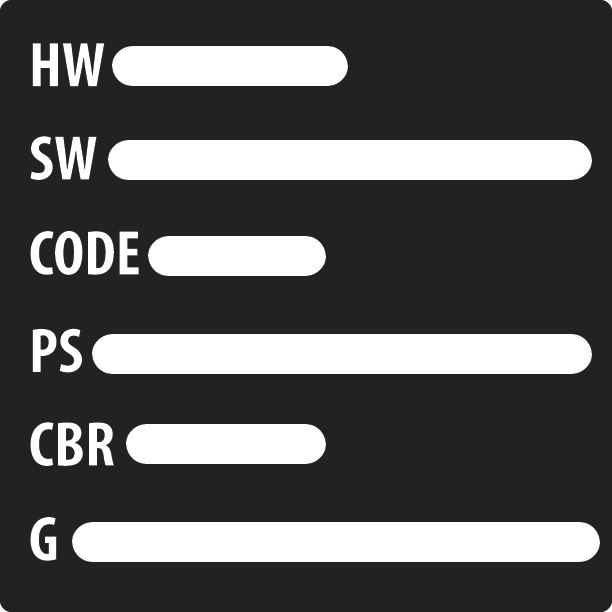
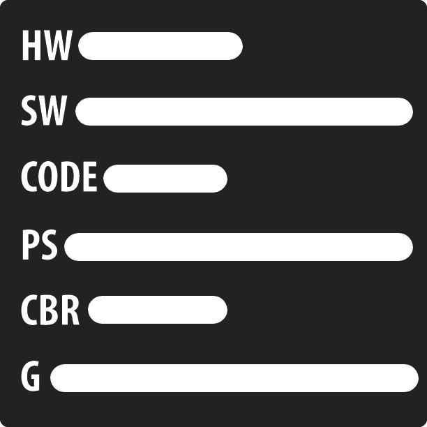

Savi
Oh, Hello there. I bet you're wondering who I am. Well, allow me to introduce myself. My name is Savi and I am currently a class 10 Year Up trainee and a student at DeVry University currently in my Junior year. As far as my background, I was born in raised here in Chicago, IL. I'm very interested in the geek culture such as: reading comics (DC Comics, Image, and Marvel), watching anime and cartoons, and gaming. My system of choice PlayStation. Before attending Year Up, I mostly studied at DeVry University where I am majoring in Technical Management. I use this knowledge that I have obtained from DeVry and apply it to my studies here at Year Up to continue to build upon the foundation that I have laid. While studying Technical Management my interests in computer networking has grown bigger than I thought it would. Seeing and learning about how the computers communicate with each other is fascinating. As for desired future goals, I would one day like to own a bar and grill. The reason I would like to pursue this is because I have a passion for the mixing drinks and the energy of the atmosphere. Watching the show Bar Rescue and it has taught me the "do's and don't" of the industry. Some interesting facts about me are: Favourite heroes: Spider-Man (Miles Morales), Static (Virgil Hawkins), The Incredible Hulk, and Cyborg Favourite villains: Reverse-Flash, Venom, and Electro Favourite games: Assassin's Creed, Batman: Arkham, God of War, inFAMOUS, and Watch Dogs
Interesting facts about me
- Favourite heroes: Spider-Man (Miles Morales), Static (Virgil Hawkins), The Incredible Hulk, and Cyborg Favourite
- villains: Reverse-Flash, Venom, and Electro
- Favourite games: Assassin's Creed, Batman: Arkham, God of War, inFAMOUS, and Watch Dogs
- Loves Tumblr
- Likes to break the fourth law
 
